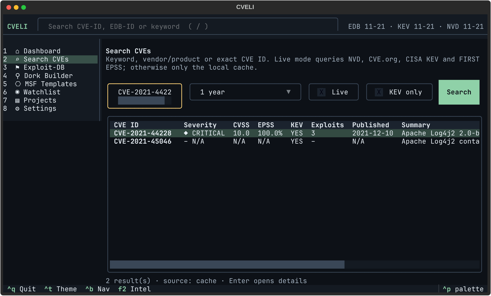

⌕
Live-first search
Keyword, vendor or exact CVE-ID. Results merge NVD, CVE.org, KEV and EPSS per CVE, so a partial KEV record never overwrites a richer NVD one.
cveli search CVE-2021-44228
v2.0 · now with Exploit-DB, Dork Builder & research templates
NVD, CVE.org, CISA KEV, FIRST EPSS and Exploit-DB used to mean five browser tabs per CVE. CVELI puts them behind one search: keyboard-first, works offline, and safe by design.

One search reaches
Every frame is the real app: the Log4Shell search, the Dork Builder refusing a secret-hunting query, and a Metasploit template that ships no payload.
Features
Keyword, vendor or exact CVE-ID. Results merge NVD, CVE.org, KEV and EPSS per CVE, so a partial KEV record never overwrites a richer NVD one.
cveli search CVE-2021-44228
46,000+ public exploit entries are indexed locally, searchable by CVE, EDB-ID, product (fuzzy), version, platform, type, author and date. Only metadata is stored, never exploit code.
cveli exploits search --cve …
A username plus a site gives you previewed, explained Google queries, tuned for 22 social networks (site:instagram.com/<user>). Queries for secrets are refused.
cveli dork build -u @alice -c social
Generate a Metasploit scaffold, a Markdown report and JSON metadata from any CVE or EDB entry. check returns Unknown and exploit always stops with fail_with.
cveli msf generate --cve …
Track vendors, products and CWEs, and see what's new since your last check. Group CVEs, exploits and dorks into research projects.
cveli watchlist check
Everything lives in local SQLite. Searches keep working when feeds go down. Usernames are redacted from logs, and metrics never leave your machine.
cveli doctor
Product tour
Guardrails
CVELI is for authorized research and defensive triage. The safety lives in the code, not in a disclaimer.
Get started
git clone https://github.com/jeevansai-k/cveli && cd cvelipython3 -m venv .venv && . .venv/bin/activate && pip install -e .cveliOptional: set NVD_API_KEY in .env to raise the NVD rate limit from 5 to 50 requests per 30 seconds.
Pricing
CVELI is MIT-licensed open source. The plans below just describe how people use it.
$0/forever
For one person and one terminal.
Most popular
$0/forever
For SOCs and security teams.
$0/forever
For people who read licences.
FAQ
No. It never contacts the systems you research. It reads public vulnerability feeds and Exploit-DB metadata, and it builds search queries that you choose to open yourself.
No. Only the public files_exploits.csv metadata is indexed. Each entry links to Exploit-DB with attribution and safety labels.
Yes. Everything is stored in local SQLite. Point EXPLOITDB_PATH at a local exploitdb checkout to refresh without a network connection.
No, but it helps: the NVD limit rises from 5 to 50 requests per 30 seconds. Put it in .env; it is never logged.
Every TUI feature has a CLI equivalent with --format json, and documented exit codes for CI and pipelines.